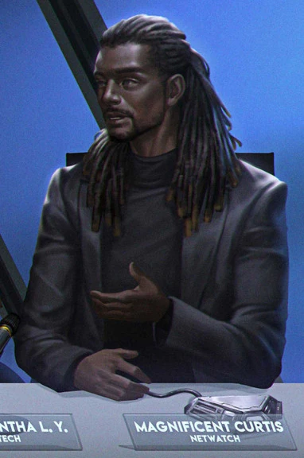
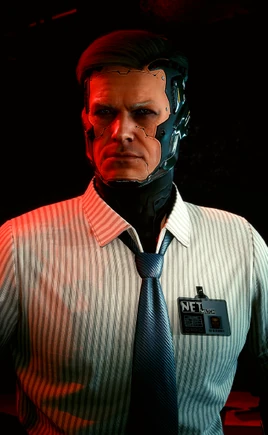
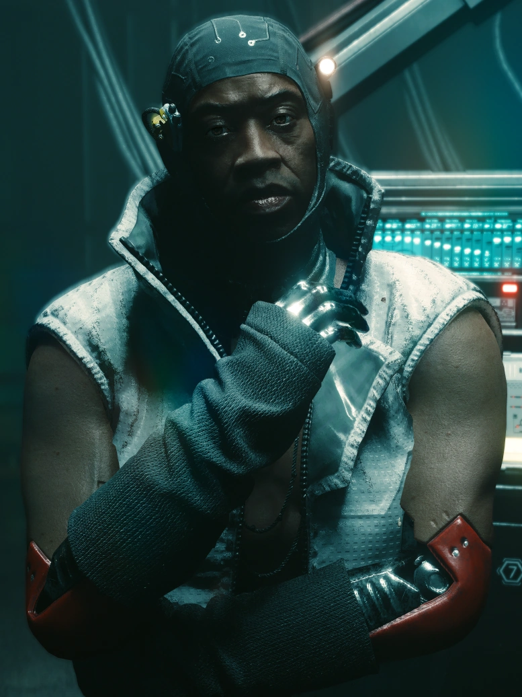

Magnificent Curtis
Stanowisko: Dyrektor Netwatch
Założył wydział Netwatch w Pacifice, po czym swoją ciężką pracą przy zwalczaniu cyberprzestępczości wspiął się na szyt Netwatch, jest jego główną twarzą od 2045
Vos Videmus

Stanowisko: Dyrektor Netwatch
Założył wydział Netwatch w Pacifice, po czym swoją ciężką pracą przy zwalczaniu cyberprzestępczości wspiął się na szyt Netwatch, jest jego główną twarzą od 2045

Stanowisko: Netrunner
Aktualny obszar działania: Night City, Pacifica

Stanowisko: Netrunner
Aktualny obszar działania: Dogtown